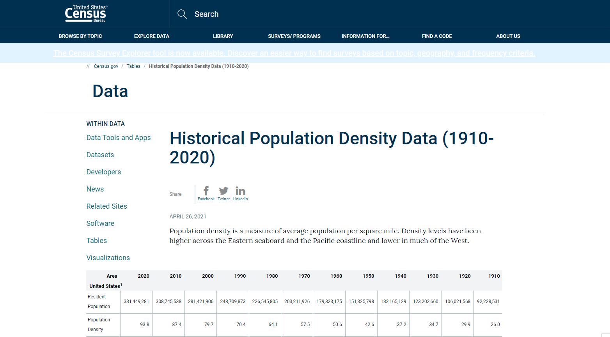

I recently came across an awesome plot created in R using the rayshader package and was completely amazed. The rayshader package allows you to produce 3D data visualizations in R. You can also translate ggplot2 objects into 3D data visualizations. After reading over the package documentation, I gained some motivation to try the package out myself and make a 3D population density map. The 3D map that will be created will be a population density map of the US.
A quick google search of population density of the US brought me to this census bureau page

Now it’s time to read the dataset into R and get an understanding of the dataset.
library(readxl) # package that allows you to read excel spreadsheets into R
pop_density_df<-read_xlsx("population-density-data-table.xlsx")
str(pop_density_df)## tibble [56 x 40] (S3: tbl_df/tbl/data.frame)
## $ Area...1 : chr [1:56] NA "Alabama" "Alaska" "Arizona" ...
## $ 2020 Census: chr [1:56] "Resident Population 2020 Census" "5024279" "733391" "7151502" ...
## $ ...3 : chr [1:56] "Population Density 2020 Census" "99.2" "1.3" "62.9" ...
## $ ...4 : chr [1:56] "Density Rank 2020 Census" "29" "52" "35" ...
## $ 2010 Census: chr [1:56] "Resident Population 2010 Census" "4779736" "710231" "6392017" ...
## $ ...6 : chr [1:56] "Population Density 2010 Census" "94.4" "1.2" "56.3" ...
## $ ...7 : chr [1:56] "Density Rank 2010 Census" "29" "52" "35" ...
## $ 2000 Census: chr [1:56] "Resident Population 2000 Census" "4447100" "626932" "5130632" ...
## $ ...9 : chr [1:56] "Population Density 2000 Census" "87.8" "1.1000000000000001" "45.2" ...
## $ ...10 : chr [1:56] "Density Rank 2000 Census" "28" "52" "38" ...
## $ Area...11 : chr [1:56] NA "Alabama" "Alaska" "Arizona" ...
## $ 1990 Census: chr [1:56] "Resident Population 1990 Census" "4040587" "550043" "3665228" ...
## $ ...13 : chr [1:56] "Population Density 1990 Census" "79.8" "1" "32.299999999999997" ...
## $ ...14 : chr [1:56] "Density Rank 1990 Census" "27" "52" "39" ...
## $ 1980 Census: chr [1:56] "Resident Population 1980 Census" "3893888" "401851" "2718215" ...
## $ ...16 : chr [1:56] "Population Density 1980 Census" "76.900000000000006" "0.7" "23.9" ...
## $ ...17 : chr [1:56] "Density Rank 1980 Census" "28" "52" "42" ...
## $ 1970 Census: chr [1:56] "Resident Population 1970 Census" "3444165" "300382" "1770900" ...
## $ ...19 : chr [1:56] "Population Density 1970 Census" "68" "0.5" "15.6" ...
## $ ...20 : chr [1:56] "Density Rank 1970 Census" "28" "52" "43" ...
## $ Area...21 : chr [1:56] NA "Alabama" "Alaska" "Arizona" ...
## $ 1960 Census: chr [1:56] "Resident Population 1960 Census" "3266740" "226167" "1302161" ...
## $ ...23 : chr [1:56] "Population Density 1960 Census" "64.5" "0.4" "11.5" ...
## $ ...24 : chr [1:56] "Density Rank 1960 Census" "28" "52" "43" ...
## $ 1950 Census: chr [1:56] "Resident Population 1950 Census" "3061743" "128643" "749587" ...
## $ ...26 : chr [1:56] "Population Density 1950 Census" "60.5" "0.2" "6.6" ...
## $ ...27 : chr [1:56] "Density Rank 1950 Census" "24" "52" "47" ...
## $ 1940 Census: chr [1:56] "Resident Population 1940 Census" "2832961" "72524" "499261" ...
## $ ...29 : chr [1:56] "Population Density 1940 Census" "55.9" "0.1" "4.4000000000000004" ...
## $ ...30 : chr [1:56] "Density Rank 1940 Census" "23" "52" "47" ...
## $ Area...31 : chr [1:56] NA "Alabama" "Alaska" "Arizona" ...
## $ 1930 Census: chr [1:56] "Resident Population 1930 Census" "2646248" "59278" "435573" ...
## $ ...33 : chr [1:56] "Population Density 1930 Census" "52.3" "0.1" "3.8" ...
## $ ...34 : chr [1:56] "Density Rank 1930 Census" "24" "52" "47" ...
## $ 1920 Census: chr [1:56] "Resident Population 1920 Census" "2348174" "55036" "334162" ...
## $ ...36 : chr [1:56] "Population Density 1920 Census" "46.4" "0.1" "2.9" ...
## $ ...37 : chr [1:56] "Density Rank 1920 Census" "25" "52" "49" ...
## $ 1910 Census: chr [1:56] "Resident Population 1910 Census" "2138093" "64356" "204354" ...
## $ ...39 : chr [1:56] "Population Density 1910 Census" "42.2" "0.1" "1.8" ...
## $ ...40 : chr [1:56] "Density Rank 1910 Census" "25" "52" "49" ...head(pop_density_df,20)## # A tibble: 20 x 40
## Area...1 `2020 Census` ...3 ...4 `2010 Census` ...6 ...7 `2000 Census`
## <chr> <chr> <chr> <chr> <chr> <chr> <chr> <chr>
## 1 <NA> Resident Popu~ Popul~ Dens~ Resident Pop~ Popu~ Dens~ Resident Pop~
## 2 Alabama 5024279 99.2 29 4779736 94.4 29 4447100
## 3 Alaska 733391 1.3 52 710231 1.2 52 626932
## 4 Arizona 7151502 62.9 35 6392017 56.3 35 5130632
## 5 Arkansas 3011524 57.9 36 2915918 56 36 2673400
## 6 Californ~ 39538223 253.7 13 37253956 239.1 13 33871648
## 7 Colorado 5773714 55.7 39 5029196 48.5 39 4301261
## 8 Connecti~ 3605944 744.7 6 3574097 738.1 6 3405565
## 9 Delaware 989948 508 8 897934 460.8 8 783600
## 10 District~ 689545 11280 1 601723 9856~ 1 572059
## 11 Florida 21538187 401.4 10 18801310 350.6 10 15982378
## 12 Georgia 10711908 185.6 19 9687653 168.4 20 8186453
## 13 Hawaii 1455271 226.6 15 1360301 211.8 15 1211537
## 14 Idaho 1839106 22.3 46 1567582 19 46 1293953
## 15 Illinois 12812508 230.8 14 12830632 231.1 14 12419293
## 16 Indiana 6785528 189.4 18 6483802 181 18 6080485
## 17 Iowa 3190369 57.1 38 3046355 54.5 38 2926324
## 18 Kansas 2937880 35.9 43 2853118 34.9 42 2688418
## 19 Kentucky 4505836 114.1 25 4339367 109.9 24 4041769
## 20 Louisiana 4657757 107.8 28 4533372 104.9 26 4468976
## # ... with 32 more variables: ...9 <chr>, ...10 <chr>, Area...11 <chr>,
## # 1990 Census <chr>, ...13 <chr>, ...14 <chr>, 1980 Census <chr>,
## # ...16 <chr>, ...17 <chr>, 1970 Census <chr>, ...19 <chr>, ...20 <chr>,
## # Area...21 <chr>, 1960 Census <chr>, ...23 <chr>, ...24 <chr>,
## # 1950 Census <chr>, ...26 <chr>, ...27 <chr>, 1940 Census <chr>,
## # ...29 <chr>, ...30 <chr>, Area...31 <chr>, 1930 Census <chr>, ...33 <chr>,
## # ...34 <chr>, 1920 Census <chr>, ...36 <chr>, ...37 <chr>, ...Looking over the dataset you can tell that it needs to be cleaned up a bit. For the first map I just want to plot the 2020 population density for the entire US.
library(tidyverse)
pop_df_2020<-rename(pop_density_df,pop_2020 = ...3,# rename column name ...3 to pop_2020
state_name = Area...1)%>%
select(state_name,pop_2020)%>%
filter(!pop_2020 =='Population Density 2020 Census')Now that the data is cleaned up, it’s time to get the state boundary shapefile. This can be done by installing and loading the urbnmapr package.
devtools::install_github("UrbanInstitute/urbnmapr")
library(urbnmapr)
library(tidyverse)
spatial_data_merg <- left_join(pop_df_2020,
get_urbn_map(map = "states", sf = TRUE),
by = "state_name")